个人完成 / PERSONAL
孔朗 · 个人完成
- 广东地域文化切入与设计概念
- 粤剧脸谱和地砖纹样的视觉提取
- 图形、色彩与版式系统
- 包装展开面与立体效果呈现
- 系列平面视觉与竞赛汇报图
YUEYUN QIANHUA
PACKAGING DESIGN
从广东地域文化记忆出发，将粤剧脸谱、舞台意象与广式地砖纹样转化为包装图形，建立具有识别度的文化包装视觉系统。
EXPLORE THE PROCESS · 从文化来源到包装应用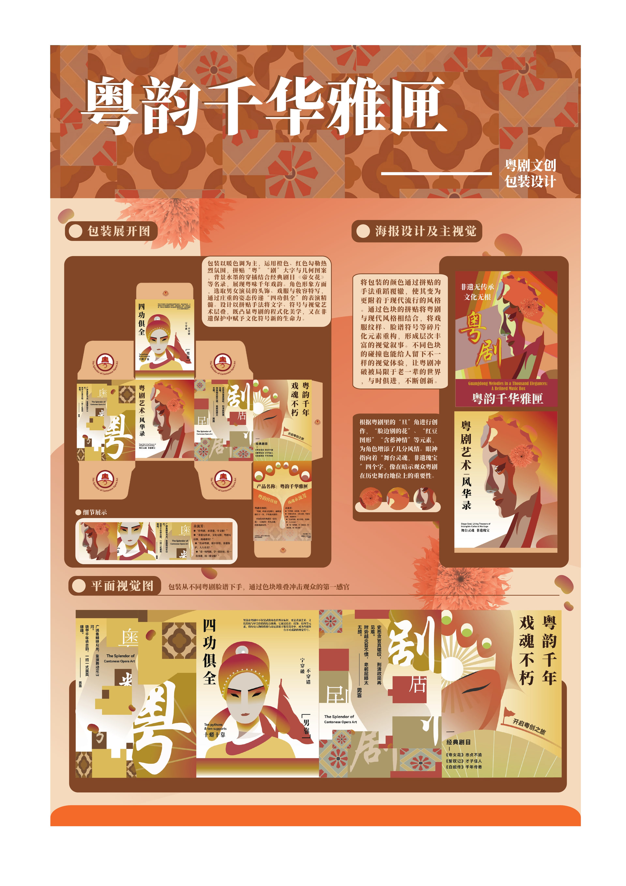
03 / BACKGROUND
作为广东云浮人，粤剧并不是抽象的文化标签，而是与地方生活、乡村环境和成长记忆相连的视觉经验。
项目以粤剧文化包装为命题，将粤剧脸谱的角色特征、舞台意象和小时候乡村常见的广式地砖花纹放在同一套视觉逻辑中，尝试在传统文化识别度与当代包装表达之间建立平衡。
04 / REGIONAL SOURCES
文化来源聚焦两条线索：一条来自粤剧人物、脸谱与舞台叙事；另一条来自广东日常空间中反复出现的花纹地砖。
项目未独立保存草稿文件。本页只依据现有汇报图和源文件中的完整设计对象呈现元素来源，不补造不存在的手稿过程。
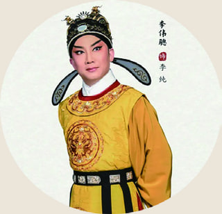
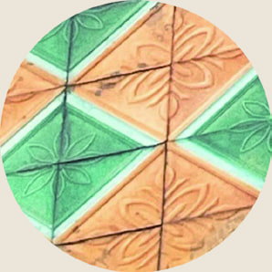
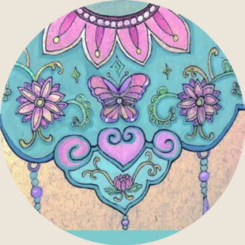
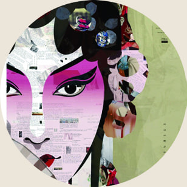
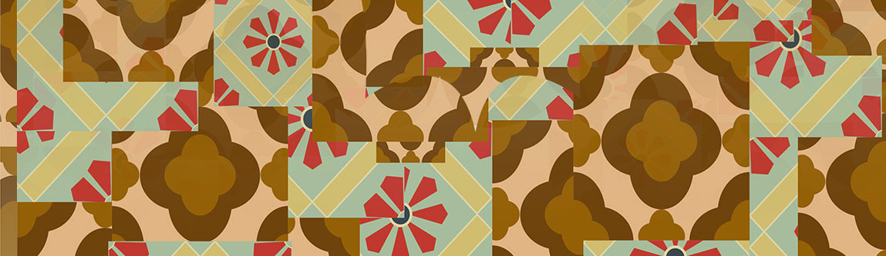
05 / DESIGN CONCEPT
设计重点不是直接复制脸谱，而是提取人物轮廓、妆容色块、戏服节奏与舞台构成，再与地砖的重复几何关系组合。
图形采用分层色块、拼贴和纵向文字建立节奏；暖红、金黄、米白与棕色形成主色关系，使包装既保留戏曲的热烈感，也具备统一的陈列识别度。
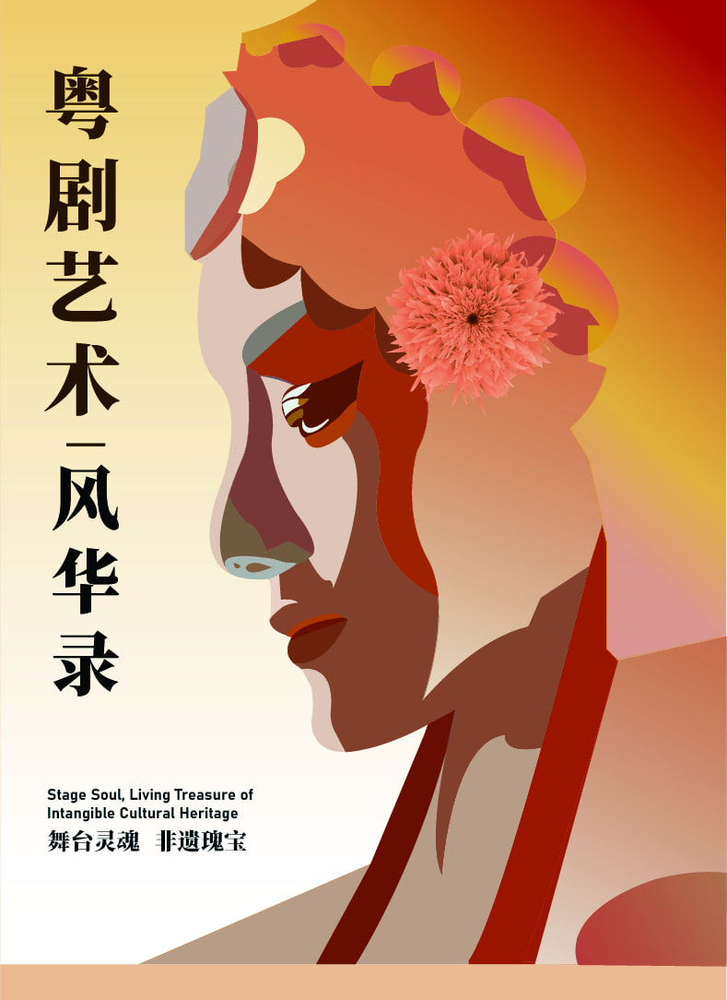
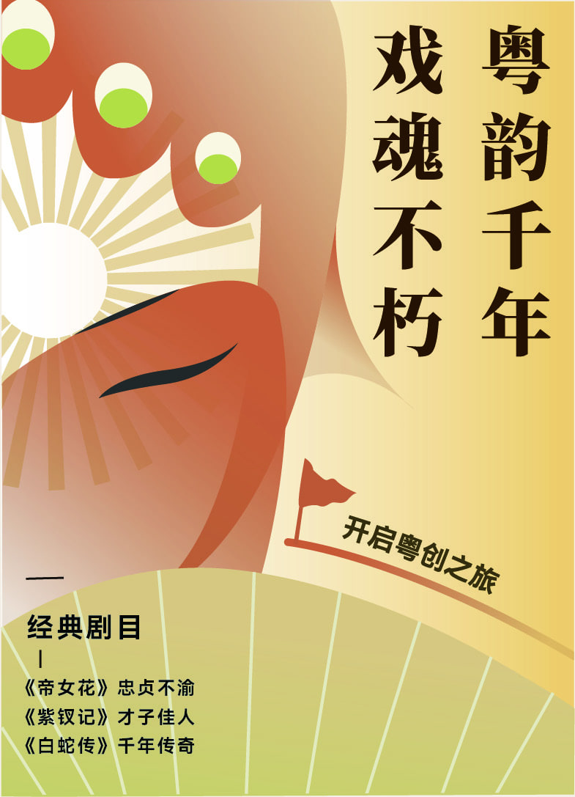
06 / GRAPHIC SYSTEM
图形系统以角色视觉、文字层级和地砖模块为三类基本单元，通过不同尺度和方向的组合建立连续性。
在不同包装面和海报中，角色承担视觉焦点，地砖纹样负责连接与分区，纵向标题则强化粤剧舞台与传统书写的节奏感。
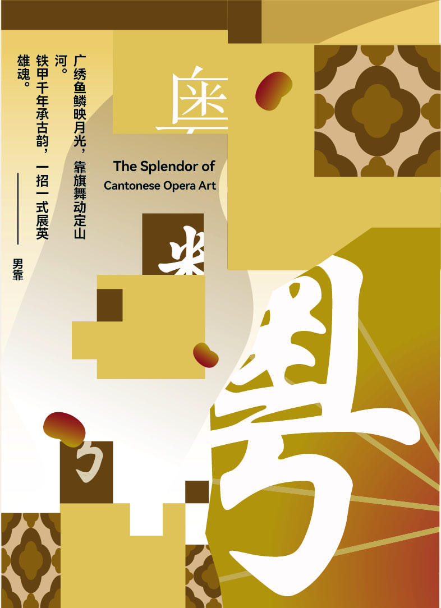
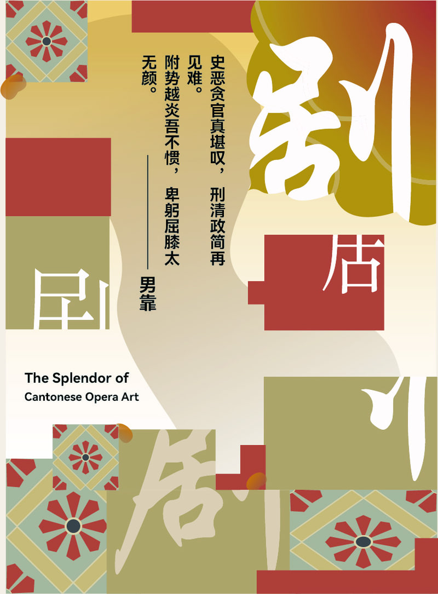
07 / PACKAGING APPLICATION
包装展开面围绕信息层级、角色分布和图形连续关系展开，使主视觉、说明文字与辅助纹样在折叠后仍能形成清晰的观看顺序。
立体效果用于检验正面、侧面与转角之间的视觉衔接，确保两组角色主题在同一系列中具有差异，也保持统一。
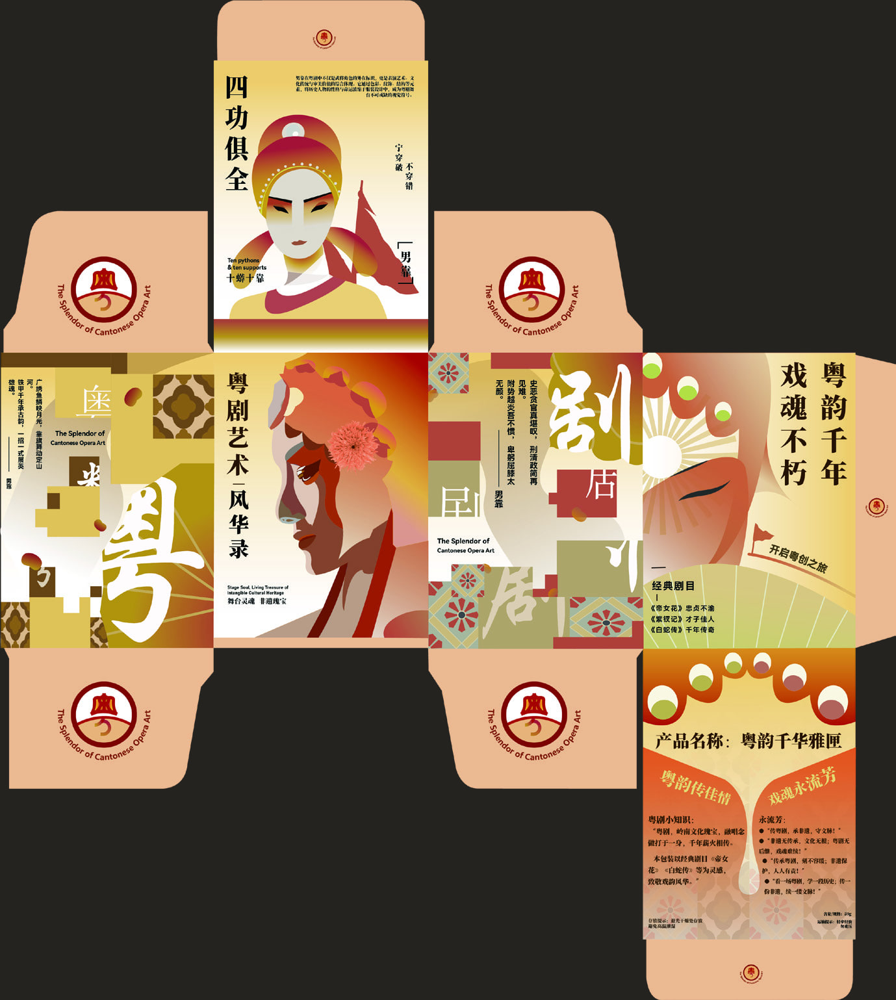
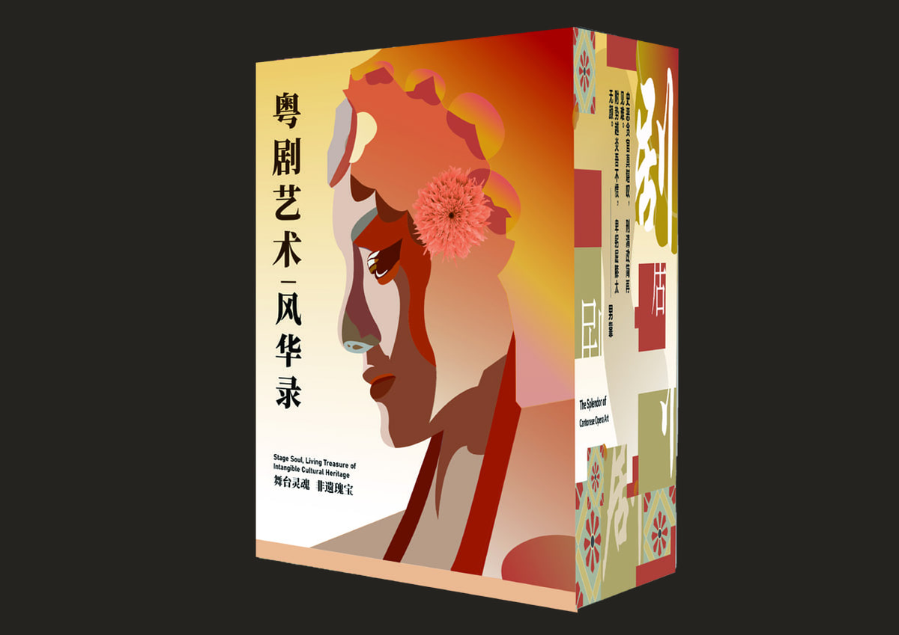
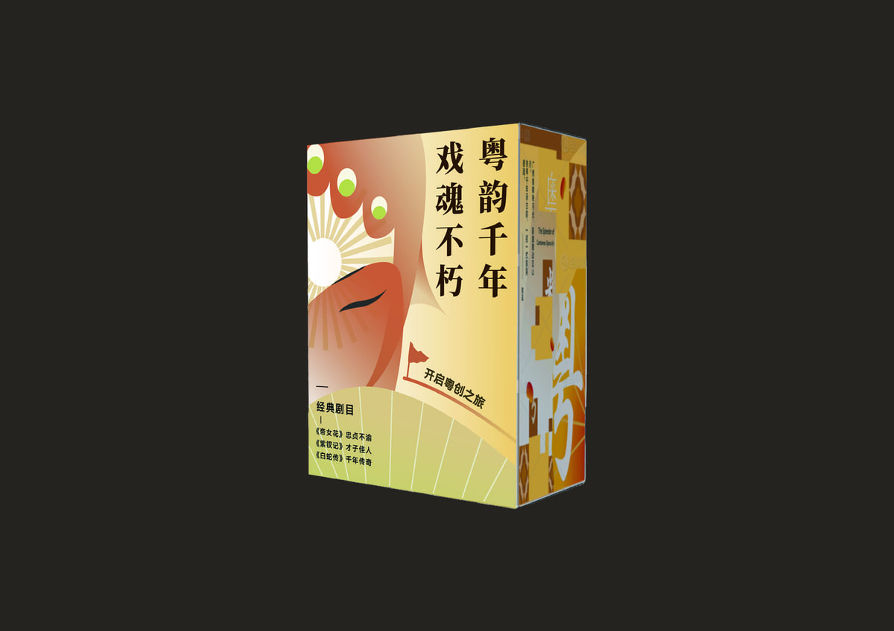
08 / COMPETITION OUTCOME
项目形成包装展开图、立体效果、系列平面视觉与完整汇报图，并获得 2024—2025 学年度校内包装设计学科竞赛三等奖。
作品作者为孔朗，指导老师为邱志聪。本案例只展示 2025 年个人竞赛版本，不混入后续其他项目素材。
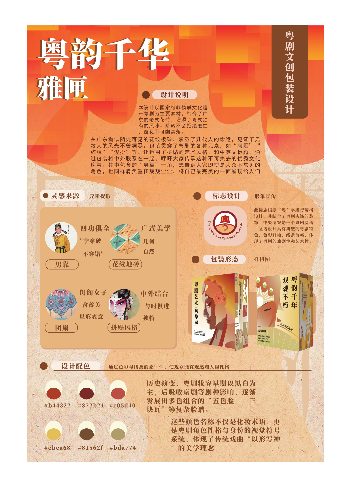
09 / CONTRIBUTION
本项目由我个人完成。从地域文化切入、元素选择到图形系统、包装视觉和竞赛汇报，均由我独立推进并完成。
个人完成 / PERSONAL
设计决策 / DESIGN DECISIONS
项目记录 / PROJECT RECORD
2025 年校内包装设计学科竞赛个人作品，指导老师为邱志聪。现有资料没有独立草稿文件，因此过程部分只展示源文件中可核实的设计元素与视觉转化。